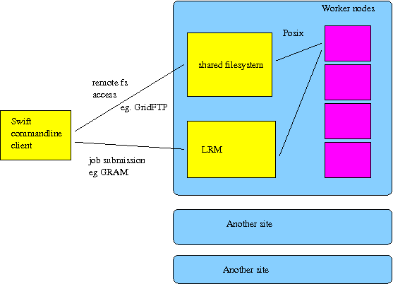

1. Overview
This manual provides reference material for Swift: the SwiftScript language and the Swift runtime system. For introductory material, consult the Swift tutorial http://www.ci.uchicago.edu/swift/guides/tutorial.php.
Swift is a data-oriented coarse grained scripting language that supports dataset typing and mapping, dataset iteration, conditional branching, and procedural composition.
Swift programs (or workflows) are written in a language called SwiftScript.
SwiftScript programs are dataflow oriented - they are primarily concerned with processing (possibly large) collections of data files, by invoking programs to do that processing. Swift handles execution of such programs on remote sites by choosing sites, handling the staging of input and output files to and from the chosen sites and remote execution of program code.
2. The SwiftScript Language
2.1. Language basics
A Swift script describes data, application components, invocations of applications components, and the inter-relations (data flow) between those invocations.
Data is represented in a script by strongly-typed single-assignment variables. The syntax superficially resembles C and Java. For example, { and } characters are used to enclose blocks of statements.
Types in Swift can be atomic or composite. An atomic type can be either a primitive type or a mapped type. Swift provides a fixed set of primitive types, such as integer and string. A mapped type indicates that the actual data does not reside in CPU addressable memory (as it would in conventional programming languages), but in POSIX-like files. Composite types are further subdivided into structures and arrays. Structures are similar in most respects to structure types in other languages. Arrays use numeric indices, but are sparse. They can contain elements of any type, including other array types, but all elements in an array must be of the same type. We often refer to instances of composites of mapped types as datasets.

Mapped type and composite type variable declarations can be annotated with a mapping descriptor indicating the file(s) that make up that dataset. For example, the following line declares a variable named photo with type image. It additionally declares that the data for this variable is stored in a single file named shane.jpeg.
image photo <"shane.jpeg">;
Component programs of scripts are declared in an app declaration, with the description of the command line syntax for that program and a list of input and output data. An app block describes a functional/dataflow style interface to imperative components.
For example, the following example lists a procedure which makes use of the ImageMagick http://www.imagemagick.org/ convert command to rotate a supplied image by a specified angle:
app (image output) rotate(image input) { convert "-rotate" angle @input @output; }
A procedure is invoked using the familiar syntax:
rotated = rotate(photo, 180);
While this looks like an assignment, the actual unix level execution consists of invoking the command line specified in the app declaration, with variables on the left of the assignment bound to the output parameters, and variables to the right of the procedure invocation passed as inputs.
The examples above have used the type image without any definition of that type. We can declare it as a marker type which has no structure exposed to SwiftScript:
type image;
This does not indicate that the data is unstructured; but it indicates that the structure of the data is not exposed to SwiftScript. Instead, SwiftScript will treat variables of this type as individual opaque files.
With mechanisms to declare types, map variables to data files, and declare and invoke procedures, we can build a complete (albeit simple) script:
type image; image photo <"shane.jpeg">; image rotated <"rotated.jpeg">; app (image output) rotate(image input, int angle) { convert "-rotate" angle @input @output; } rotated = rotate(photo, 180);
This script can be invoked from the command line:
$ ls *.jpeg shane.jpeg $ swift example.swift ... $ ls *.jpeg shane.jpeg rotated.jpeg
This executes a single convert command, hiding from the user features such as remote multisite execution and fault tolerance that will be discussed in a later section.


2.2. Arrays and Parallel Execution
Arrays of values can be declared using the [] suffix. An array be mapped to a collection of files, one element per file, by using a different form of mapping expression. For example, the filesys_mapper maps all files matching a particular unix glob pattern into an array:
file frames[] <filesys_mapper; pattern="*.jpeg">;
The foreach construct can be used to apply the same block of code to each element of an array:
foreach f,ix in frames { output[ix] = rotate(frames, 180); }
Sequential iteration can be expressed using the iterate construct:
step[0] = initialCondition(); iterate ix { step[ix] = simulate(step[ix-1]); }
This fragment will initialise the 0-th element of the step array to some initial condition, and then repeatedly run the simulate procedure, using each execution’s outputs as input to the next step.
2.3. Ordering of execution
Non-array variables are single-assignment, which means that they must be assigned to exactly one value during execution. A procedure or expression will be executed when all of its input parameters have been assigned values. As a result of such execution, more variables may become assigned, possibly allowing further parts of the script to execute.
In this way, scripts are implicitly parallel. Aside from serialisation implied by these dataflow dependencies, execution of component programs can proceed in parallel.
In this fragment, execution of procedures p and q can happen in parallel:
y=p(x); z=q(x);
while in this fragment, execution is serialised by the variable y, with procedure p executing before q.
y=p(x); z=q(y);
Arrays in SwiftScript are more monotonic - a generalisation of being assignment. Knowledge about the content of an array increases during execution, but cannot otherwise change. Each element of the array is itself single assignment or monotonic (depending on its type). During a run all values for an array are eventually known, and that array is regarded as closed.
Statements which deal with the array as a whole will often wait for the array to be closed before executing (thus, a closed array is the equivalent of a non-array type being assigned). However, a foreach statement will apply its body to elements of an array as they become known. It will not wait until the array is closed.
Consider this script:
file a[]; file b[]; foreach v,i in a { b[i] = p(v); } a[0] = r(); a[1] = s();
Initially, the foreach statement will have nothing to execute, as the array a has not been assigned any values. The procedures r and s will execute. As soon as either of them is finished, the corresponding invocation of procedure p will occur. After both r and s have completed, the array a will be closed since no other statements in the script make an assignment to a.
2.4. Compound procedures
As with many other programming languages, procedures consisting of SwiftScript code can be defined. These differ from the previously mentioned procedures declared with the app keyword, as they invoke other SwiftScript procedures rather than a component program.
(file output) process (file input) { file intermediate; intermediate = first(input); output = second(intermediate); } file x <"x.txt">; file y <"y.txt">; y = process(x);
This will invoke two procedures, with an intermediate data file named anonymously connecting the first and second procedures.
Ordering of execution is generally determined by execution of app procedures, not by any containing compound procedures. In this code block:
(file a, file b) A() { a = A1(); b = A2(); } file x, y, s, t; (x,y) = A(); s = S(x); t = S(y);
then a valid execution order is: A1 S(x) A2 S(y). The compound procedure A does not have to have fully completed for its return values to be used by subsequent statements.
2.5. More about types
Each variable and procedure parameter in SwiftScript is strongly typed. Types are used to structure data, to aid in debugging and checking program correctness and to influence how Swift interacts with data.
The image type declared in previous examples is a marker type. Marker types indicate that data for a variable is stored in a single file with no further structure exposed at the SwiftScript level.
Arrays have been mentioned above, in the arrays section. A code block may be applied to each element of an array using foreach; or individual elements may be references using [] notation.
There are a number of primitive types:
| type | contains |
|---|---|
int |
integers |
string |
strings of text |
float |
floating point numbers, that behave the same as Java doubles |
boolean |
true/false |
Complex types may be defined using the type keyword:
type headerfile; type voxelfile; type volume { headerfile h; voxelfile v; }
Members of a complex type can be accessed using the . operator:
volume brain; o = p(brain.h);
Sometimes data may be stored in a form that does not fit with Swift’s file-and-site model; for example, data might be stored in an RDBMS on some database server. In that case, a variable can be declared to have external type. This indicates that Swift should use the variable to determine execution dependency, but should not attempt other data management; for example, it will not perform any form of data stage-in or stage-out it will not manage local data caches on sites; and it will not enforce component program atomicity on data output. This can add substantial responsibility to component programs, in exchange for allowing arbitrary data storage and access methods to be plugged in to scripts.
type file; app (external o) populateDatabase() { populationProgram; } app (file o) analyseDatabase(external i) { analysisProgram @o; } external database; file result <"results.txt">; database = populateDatabase(); result = analyseDatabase(database);
Some external database is represented by the database variable. The populateDatabase procedure populates the database with some data, and the analyseDatabase procedure performs some subsequent analysis on that database. The declaration of database contains no mapping; and the procedures which use database do not reference them in any way; the description of database is entirely outside of the script. The single assignment and execution ordering rules will still apply though; populateDatabase will always be run before analyseDatabase.
2.6. Data model
Data processed by Swift is strongly typed. It may be take the form of values in memory or as out-of-core files on disk. Language constructs called mappers specify how each piece of data is stored.
2.7. Mappers
When a DSHandle represents a data file (or container of datafiles), it is associated with a mapper. The mapper is used to identify which files belong to that DSHandle.
A dataset’s physical representation is declared by a mapping descriptor, which defines how each element in the dataset’s logical schema is stored in, and fetched from, physical structures such as directories, files, and remote servers.
Mappers are parameterized to take into account properties such as varying dataset location. In order to access a dataset, we need to know three things: its type, its mapping, and the value(s) of any parameter(s) associated with the mapping descriptor. For example, if we want to describe a dataset, of type imagefile, and whose physical representation is a file called "file1.bin" located at "/home/yongzh/data/", then the dataset might be declared as follows:
imagefile f1<single_file_mapper;file="/home/yongzh/data/file1.bin">
The above example declares a dataset called f1, which uses a single file mapper to map a file from a specific location.
SwiftScript has a simplified syntax for this case, since single_file_mapper is frequently used:
binaryfile f1<"/home/yongzh/data/file1.bin">
Swift comes with a number of mappers that handle common mapping patterns. These are documented in the mappers section of this guide.
2.8. More technical details about SwiftScript
The syntax of SwiftScript has a superficial resemblance to C and Java. For example, { and } characters are used to enclose blocks of statements.
A SwiftScript program consists of a number of statements. Statements may declare types, procedures and variables, assign values to variables, and express operations over arrays.
2.8.1. Variables
Variables in SwiftScript are declared to be of a specific type. Assignments to those variables must be data of that type. SwiftScript variables are single-assignment - a value may be assigned to a variable at most once. This assignment can happen at declaration time or later on in execution. When an attempt to read from a variable that has not yet been assigned is made, the code performing the read is suspended until that variable has been written to. This forms the basis for Swift’s ability to parallelise execution - all code will execute in parallel unless there are variables shared between the code that cause sequencing.
2.8.2. Variable Declarations
Variable declaration statements declare new variables. They can optionally assign a value to them or map those variables to on-disk files.
Declaration statements have the general form:
typename variablename (<mapping> | = initialValue ) ;
The format of the mapping expression is defined in the Mappers section. initialValue may be either an expression or a procedure call that returns a single value.
Variables can also be declared in a multivalued-procedure statement, described in another section.
2.8.3. Assignment Statements
Assignment statements assign values to previously declared variables. Assignments may only be made to variables that have not already been assigned. Assignment statements have the general form:
variable = value;
where value can be either an expression or a procedure call that returns a single value.
Variables can also be assigned in a multivalued-procedure statement, described in another section.
2.9. Procedures
There are two kinds of procedure: An atomic procedure, which describes how an external program can be executed; and compound procedures which consist of a sequence of SwiftScript statements.
A procedure declaration defines the name of a procedure and its input and output parameters. SwiftScript procedures can take multiple inputs and produce multiple outputs. Inputs are specified to the right of the function name, and outputs are specified to the left. For example:
(type3 out1, type4 out2) myproc (type1 in1, type2 in2)
The above example declares a procedure called myproc, which has two inputs in1 (of type type1) and in2 (of type type2) and two outputs out1 (of type type3) and out2 (of type type4).
A procedure input parameter can be an optional parameter in which case it must be declared with a default value. When calling a procedure, both positional parameter and named parameter passings can be passed, provided that all optional parameters are declared after the required parameters and any optional parameter is bound using keyword parameter passing. For example, if myproc1 is defined as:
(binaryfile bf) myproc1 (int i, string s="foo")
Then that procedure can be called like this, omitting the optional
parameter s: binaryfile mybf = myproc1(1);
or like this supplying a value for the optional parameter s:
binaryfile mybf = myproc1 (1, s="bar");
2.9.1. Atomic procedures
An atomic procedure specifies how to invoke an external executable program, and how logical data types are mapped to command line arguments.
Atomic procedures are defined with the app keyword:
app (binaryfile bf) myproc (int i, string s="foo") { myapp i s @filename(bf); }
which specifies that myproc invokes an executable called myapp, passing the values of i, s and the filename of bf as command line arguments.
2.9.2. Compound procedures
A compound procedure contains a set of SwiftScript statements:
(type2 b) foo_bar (type1 a) { type3 c; c = foo(a); // c holds the result of foo b = bar(c); // c is an input to bar }
2.10. Control Constructs
SwiftScript provides if, switch, foreach, and iterate constructs, with syntax and semantics similar to comparable constructs in other high-level languages.
2.10.1. foreach
The foreach construct is used to apply a block of statements to each element in an array. For example:
check_order (file a[]) { foreach f in a { compute(f); } }
foreach statements have the general form:
foreach controlvariable (,index) in expression { statements }
The block of statements is evaluated once for each element in expression which must be an array, with controlvariable set to the corresponding element and index (if specified) set to the integer position in the array that is being iterated over.
2.10.2. if
The if statement allows one of two blocks of statements to be executed, based on a boolean predicate. if statements generally have the form:
if(predicate) { statements } else { statements }
where predicate is a boolean expression.
2.10.3. switch
switch expressions allow one of a selection of blocks to be chosen based on the value of a numerical control expression. switch statements take the general form:
switch(controlExpression) { case n1: statements2 case n2: statements2 [...] default: statements }
The control expression is evaluated, the resulting numerical value used to select a corresponding case, and the statements belonging to that case block are evaluated. If no case corresponds, then the statements belonging to the default block are evaluated.
Unlike C or Java switch statements, execution does not fall through to subsequent case blocks, and no break statement is necessary at the end of each block.
2.10.4. iterate
iterate expressions allow a block of code to be evaluated repeatedly, with an integer parameter sweeping upwards from 0 until a termination condition holds.
The general form is:
iterate var { statements; } until (terminationExpression);
with the variable var starting at 0 and increasing by one in each iteration. That variable is in scope in the statements block and when evaluating the termination expression.
2.11. Operators
The following infix operators are available for use in SwiftScript expressions.
| operator | purpose |
|---|---|
+ |
numeric addition; string concatenation |
- |
numeric subtraction |
* |
numeric multiplication |
/ |
floating point division |
%/ |
integer division |
%% |
integer remainder of division |
== != |
comparison and not-equal-to |
< > ⇐ >= |
numerical ordering |
&& || |
boolean and, or |
! |
boolean not |
2.12. Global constants
At the top level of a SwiftScript program, the global modified may be added to a declaration so that it is visible throughout the program, rather than only at the top level of the program. This allows global constants (of any type) to be defined. (since Swift 0.10)
2.13. Imports
The import directive can be used to import definitions from another SwiftScript file. (since Swift 0.10)
For example, a SwiftScript program might contain this:
import defs; file f;
which would import the content of defs.swift in the current directory:
type file;
Imported files are read from the current working directory.
There is no requirement that a module is imported only once. If a module is imported multiple times, for example in different files, then Swift will only process the imports once.
Imports may contain anything that is valid in a SwiftScript program, including code that causes remote execution.
3. Mappers
Mappers provide a mechanism to specify the layout of mapped datasets on disk. This is needed when Swift must access files to transfer them to remote sites for execution or to pass to applications.
Swift provides a number of mappers that are useful in common cases. This section details those standard mappers. For more complex cases, it is possible to write application-specific mappers in Java and use them within a SwiftScript program.
3.1. The single file mapper
The single_file_mapper maps a single physical file to a dataset.
| Swift variable | Filename |
|---|---|
f |
myfile |
f[0] |
INVALID |
f.bar |
INVALID |
| parameter | meaning |
|---|---|
file |
The location of the physical file including path and file name. |
Example:
file f <single_file_mapper;file="plot_outfile_param">;
There is a simplified syntax for this mapper:
file f <"plot_outfile_param">;
3.2. The simple mapper
The simple_mapper maps a file or a list of files into an array by prefix, suffix, and pattern. If more than one file is matched, each of the file names will be mapped as a subelement of the dataset.
| Parameter | Meaning |
|---|---|
location |
A directory that the files are located. |
prefix |
The prefix of the files |
suffix |
The suffix of the files, for instance: ".txt" |
pattern |
A UNIX glob style pattern, for instance: "foo" would match all file names that contain foo. When this mapper is used to specify output filenames, pattern is ignored. |
type file; file f <simple_mapper;prefix="foo", suffix=".txt">;
The above maps all filenames that start with foo and have an extension .txt into file f.
| Swift variable | Filename |
|---|---|
f |
foo.txt |
type messagefile; (messagefile t) greeting(string m) {. app { echo m stdout=@filename(t); } } messagefile outfile <simple_mapper;prefix="foo",suffix=".txt">; outfile = greeting("hi");
This will output the string hi to the file foo.txt.
The simple_mapper can be used to map arrays. It will map the array index into the filename between the prefix and suffix.
type messagefile; (messagefile t) greeting(string m) { app { echo m stdout=@filename(t); } } messagefile outfile[] <simple_mapper;prefix="baz",suffix=".txt">; outfile[0] = greeting("hello"); outfile[1] = greeting("middle"); outfile[2] = greeting("goodbye");
| Swift variable | Filename |
|---|---|
outfile[0] |
baz0000.txt |
outfile[1] |
baz0001.txt |
outfile[2] |
baz0002.txt |
simple_mapper can be used to map structures. It will map the name of the structure member into the filename, between the prefix and the suffix.
type messagefile; type mystruct { messagefile left; messagefile right; }; (messagefile t) greeting(string m) { app { echo m stdout=@filename(t); } } mystruct out <simple_mapper;prefix="qux",suffix=".txt">; out.left = greeting("hello"); out.right = greeting("goodbye");
This will output the string "hello" into the file qux.left.txt and the string "goodbye" into the file qux.right.txt.
| Swift variable | Filename |
|---|---|
out.left |
quxleft.txt |
out.right |
quxright.txt |
3.3. concurrent mapper
concurrent_mapper is almost the same as the simple mapper, except that it is used to map an output file, and the filename generated will contain an extract sequence that is unique. This mapper is the default mapper for variables when no mapper is specified.
| Parameter | Meaning |
|---|---|
location |
A directory that the files are located. |
prefix |
The prefix of the files |
suffix |
The suffix of the files, for instance: ".txt" pattern A UNIX glob style pattern, for instance: "foo" would match all file names that contain foo. When this mapper is used to specify output filenames, pattern is ignored. |
Example:
file f1; file f2 <concurrent_mapper;prefix="foo", suffix=".txt">;
The above example would use concurrent mapper for f1 and f2, and generate f2 filename with prefix "foo" and extension ".txt"
3.4. File system mapper
filesys_mapper is similar to the simple mapper, but maps a file or a list of files to an array. Each of the filename is mapped as an element in the array. The order of files in the resulting array is not defined.
TODO: note on difference between location as a relative vs absolute path wrt staging to remote location - as mihael said: It’s because you specify that location in the mapper. Try location="." instead of location="/sandbox/…"
| parameter | meaning |
|---|---|
location |
The directory where the files are located. |
prefix |
The prefix of the files |
suffix |
The suffix of the files, for instance: ".txt" |
pattern |
A UNIX glob style pattern, for instance: "foo" would match all file names that contain foo. |
Example:
file texts[] <filesys_mapper;prefix="foo", suffix=".txt">;
The above example would map all filenames that start with "foo" and have an extension ".txt" into the array texts. For example, if the specified directory contains files: foo1.txt, footest.txt, foo__1.txt, then the mapping might be:
| Swift variable | Filename |
|---|---|
texts[0] |
footest.txt |
texts[1] |
foo1.txt |
texts[2] |
foo__1.txt |
3.5. fixed array mapper
The fixed_array_mapper maps from a string that contains a list of filenames into a file array.
| parameter | Meaning |
|---|---|
files |
A string that contains a list of filenames, separated by space, comma or colon |
Example:
file texts[] <fixed_array_mapper;files="file1.txt, fileB.txt, file3.txt">;
would cause a mapping like this:
| Swift variable | Filename |
|---|---|
texts[0] |
file1.txt |
texts[1] |
fileB.txt |
texts[2] |
file3.txt |
3.6. array mapper
The array_mapper maps from an array of strings into a file
| parameter | meaning |
|---|---|
files |
An array of strings containing one filename per element |
Example:
string s[] = [ "a.txt", "b.txt", "c.txt" ]; file f[] <array_mapper;files=s>;
This will establish the mapping:
| Swift variable | Filename |
|---|---|
f[0] |
a.txt |
f[1] |
b.txt |
f[2] |
c.txt |
3.7. regular expression mapper
The regexp_mapper transforms one file name to another using regular expression matching.
| parameter | meaning |
|---|---|
source |
The source file name |
match |
Regular expression pattern to match, use |
() |
to match whatever regular expression is inside the parentheses, and indicate the start and end of a group; the contents of a group can be retrieved with the |
\\number |
special sequence (two backslashes are needed because the backslash is an escape sequence introducer) |
transform |
The pattern of the file name to transform to, use \number to reference the group matched. |
Example:
string s = "picture.gif"; file f <regexp_mapper; source=s, match="(.*)gif", transform="\\1jpg">;
This example transforms a string ending gif into one ending jpg and maps that to a file.
| Swift variable | Filename |
|---|---|
f |
picture.jpg |
3.8. csv mapper
The csv_mapper maps the content of a CSV (comma-separated value) file into an array of structures. The dataset type needs to be correctly defined to conform to the column names in the file. For instance, if the file contains columns: name age GPA then the type needs to have member elements like this:
type student { file name; file age; file GPA; }
If the file does not contain a header with column info, then the column names are assumed as column1, column2, etc.
| Parameter | Meaning |
|---|---|
file |
The name of the CSV file to read mappings from. |
header |
Whether the file has a line describing header info; default is |
true |
|
skip |
The number of lines to skip at the beginning (after header line); default is 0. |
hdelim |
Header field delimiter; default is the value of the |
delim |
parameter |
delim |
Content field delimiters; defaults are space, tab and comma |
Example:
student stus[] <csv_mapper;file="stu_list.txt">;
The above example would read a list of student info from file "stu_list.txt" and map them into a student array. By default, the file should contain a header line specifying the names of the columns. If stu_list.txt contains the following:
name,age,gpa 101-name.txt, 101-age.txt, 101-gpa.txt name55.txt, age55.txt, age55.txt q, r, s
then some of the mappings produced by this example would be:
| stus[0].name | 101-name.txt |
|---|---|
stus[0].age |
101-age.txt |
stus[0].gpa |
101-gpa.txt |
stus[1].name |
name55.txt |
stus[1].age |
age55.txt |
stus[1].gpa |
gpa55.txt |
stus[2].name |
q |
stus[2].age |
r |
stus[2].gpa |
s |
3.9. external mapper
The external mapper, ext maps based on the output of a supplied Unix executable.
parameter |
meaning |
exec |
The name of the executable (relative to the current directory, if an absolute path is not specified) |
* |
Other parameters are passed to the executable prefixed with a - symbol |
The output of the executable should consist of two columns of data, separated by a space. The first column should be the path of the mapped variable, in SwiftScript syntax (for example [2] means the 2nd element of an array) or the symbol $ to represent the root of the mapped variable.
Example: With the following in mapper.sh,
#!/bin/bash echo "[2] qux" echo "[0] foo" echo "[1] bar"
then a mapping statement:
student stus[] <ext;exec="mapper.sh">;
would map
| Swift variable | Filename |
|---|---|
stus[0] |
foo |
stus[1] |
bar |
stus[2] |
qux |
4. Commands
The commands detailed in this section are available in the bin/ directory of a Swift installation and can by run from the commandline if that directory is placed on the PATH.
4.1. swift
The swift command is the main command line tool for executing SwiftScript programs.
4.1.1. Command-line Syntax
The swift command is invoked as follows: swift [options] SwiftScript-program [SwiftScript-arguments]* with options taken from the following list, and SwiftScript-arguments made available to the SwiftScript program through the @arg function.
Swift command-line options
-help or -h
Display usage information
-typecheck
Does a typecheck of a SwiftScript program, instead of executing it.
-dryrun
Runs the SwiftScript program without submitting any jobs (can be used to get a graph)
-monitor
Shows a graphical resource monitor
-resume file
Resumes the execution using a log file
-config file
Indicates the Swift configuration file to be used for this run. Properties in this configuration file will override the default properties. If individual command line arguments are used for properties, they will override the contents of this file.
-verbose | -v
Increases the level of output that Swift produces on the console to include more detail about the execution
-debug | -d
Increases the level of output that Swift produces on the console to include lots of detail about the execution
-logfile file
Specifies a file where log messages should go to. By default Swift uses the name of the program being run and a numeric index (e.g. myworkflow.1.log)
-runid identifier
Specifies the run identifier. This must be unique for every invocation and is used in several places to keep files from different executions cleanly separated. By default, a datestamp and random number are used to generate a run identifier. When using this parameter, care should be taken to ensure that the run ID remains unique with respect to all other run IDs that might be used, irrespective of (at least) expected execution sites, program or user.
-tui
Displays an interactive text mode monitor during a run. (since Swift 0.9)
In addition, the following Swift properties can be set on the command line:
-
caching.algorithm
-
clustering.enabled
-
clustering.min.time
-
clustering.queue.delay
-
ip.address
-
kickstart.always.transfer
-
kickstart.enabled
-
lazy.errors
-
pgraph
-
pgraph.graph.options
-
pgraph.node.options
-
sitedir.keep
-
sites.file
-
tc.file
-
tcp.port.range
4.1.2. Return codes
The swift command may exit with the following return codes:
| value | meaning |
|---|---|
0 |
success |
1 |
command line syntax error or missing project name |
2 |
error during execution |
3 |
error during compilation |
4 |
input file does not exist |
4.1.3. Environment variables
The swift is influenced by the following environment variables:
GLOBUS_HOSTNAME, GLOBUS_TCP_PORT_RANGE - set in the environment before running Swift. These can be set to inform Swift of the configuration of your local firewall. More information can be found in the Globus firewall How-to http://dev.globus.org/wiki/FirewallHowTo.
COG_OPTS - set in the environment before running Swift. Options set in this variable will be passed as parameters to the Java Virtual Machine which will run Swift. The parameters vary between virtual machine imlementations, but can usually be used to alter settings such as maximum heap size. Typing java -help will sometimes give a list of commands. The Sun Java 1.4.2 command line options are documented here http://java.sun.com/j2se/1.4.2/docs/tooldocs/windows/java.html.
4.2. swift-osg-ress-site-catalog
The swift-osg-ress-site-catalog command generates a site catalog based on OSG http://www.opensciencegrid.org/'s ReSS information system (since Swift 0.9)
Usage: swift-osg-ress-site-catalog [options]
--help
Show help message
--vo=[name]
Set what VO to query ReSS for
--engage-verified
Only retrieve sites verified by the Engagement VO site verification tests This can not be used together with |--vo|, as the query will only work for sites advertising support for the Engagement VO.
This option means information will be retrieved from the Engagement collector instead of the top-level ReSS collector.
--out=[filename]
Write to [filename] instead of stdout
--condor-g
Generates sites files which will submit jobs using a local Condor-G installation rather than through direct GRAM2 submission. (since Swift 0.10)
4.3. swift-plot-log
swift-plot-log generates summaries of Swift run log files.
Usage: swift-plot-log [logfile] [targets]
When no targets are specified, swift-plog-log will generate an HTML report for the run. When targets are specified, only those named targets will be generated.
5. Executing app procedures
This section describes how Swift executes app procedures, and requirements on the behaviour of application programs used in app procedures. These requirements are primarily to ensure that the Swift can run your application in different places and with the various fault tolerance mechanisms in place.
5.1. Mapping of app semantics into unix process execution semantics
This section describes how an app procedure invocation is translated into a (remote) unix process execution. It does not describe the mechanisms by which Swift performs that translation; that is described in the next section.
In this section, this example SwiftScript program is used for reference:
type file; app (file o) count(file i) { wc @i stdout=@o; } file q <"input.txt">; file r <"output.txt">;
The executable for wc will be looked up in tc.data.
This unix executable will then be executed in some application procedure workspace. This means:
Each application procedure workspace will have an application workspace directory. (TODO: can collapse terms application procedure workspace and application workspace directory ?
This application workspace directory will not be shared with any other application procedure execution attempt; all application procedure execution attempts will run with distinct application procedure workspaces. (for the avoidance of doubt: If a SwiftScript procedure invocation is subject to multiple application procedure execution attempts (due to Swift-level restarts, retries or replication) then each of those application procedure execution attempts will be made in a different application procedure workspace. )
The application workspace directory will be a directory on a POSIX filesystem accessible throughout the application execution by the application executable.
Before the application executable is executed:
-
The application workspace directory will exist.
-
The input files will exist inside the application workspace directory (but not necessarily as direct children; there may be subdirectories within the application workspace directory).
-
The input files will be those files mapped to input parameters of the application procedure invocation. (In the example, this means that the file input.txt will exist in the application workspace directory)
-
For each input file dataset, it will be the case that @filename or @filenames invoked with that dataset as a parameter will return the path relative to the application workspace directory for the file(s) that are associated with that dataset. (In the example, that means that @i will evaluate to the path input.txt)
-
For each file-bound parameter of the Swift procedure invocation, the associated files (determined by data type?) will always exist.
-
The input files must be treated as read only files. This may or may not be enforced by unix file system permissions. They may or may not be copies of the source file (conversely, they may be links to the actual source file).
During/after the application executable execution, the following must be true:
-
If the application executable execution was successful (in the opinion of the application executable), then the application executable should exit with unix return code 0; if the application executable execution was unsuccessful (in the opinion of the application executable), then the application executable should exit with unix return code not equal to 0.
-
Each file mapped from an output parameter of the SwiftScript procedure call must exist. Files will be mapped in the same way as for input files.
(? Is it defined that output subdirectories will be precreated before execution or should app executables expect to make them? That's probably determined by the present behaviour of wrapper.sh)
-
Output produced by running the application executable on some inputs should be the same no matter how many times, when or where that application executable is run. The same can vary depending on application (for example, in an application it might be acceptable for a PNG→JPEG conversion to produce different, similar looking, output jpegs depending on the environment)
Things to not assume:
-
anything about the path of the application workspace directory
-
that either the application workspace directory will be deleted or will continue to exist or will remain unmodified after execution has finished
-
that files can be passed(?def) between application procedure invocations through any mechanism except through files known to Swift through the mapping mechanism (there is some exception here for external datasets - there are a separate set of assertions that hold for external datasets)
-
that application executables will run on any particular site of those available, or than any combination of applications will run on the same or different sites.
5.2. How Swift implements the site execution model
This section describes the implementation of the semantics described in the previous section.
Swift executes application procedures on one or more sites.
Each site consists of:
-
worker nodes. There is some execution mechanism through which the Swift client side executable can execute its wrapper script on those worker nodes. This is commonly GRAM or Falkon or coasters.
-
a site-shared file system. This site shared filesystem is accessible through some file transfer mechanism from the Swift client side executable. This is commonly GridFTP or coasters. This site shared filesystem is also accessible through the posix file system on all worker nodes, mounted at the same location as seen through the file transfer mechanism. Swift is configured with the location of some site working directory on that site-shared file system.
There is no assumption that the site shared file system for one site is accessible from another site.
For each workflow run, on each site that is used by that run, a run directory is created in the site working directory, by the Swift client side.
In that run directory are placed several subdirectories:
-
shared/ - site shared files cache
-
kickstart/ - when kickstart is used, kickstart record files for each job that has generated a kickstart record.
-
info/ - wrapper script log files
-
status/ - job status files
-
jobs/ - application workspace directories (optionally placed here - see below)
Application execution looks like this:
For each application procedure call:
The Swift client side selects a site; copies the input files for that procedure call to the site shared file cache if they are not already in the cache, using the file transfer mechanism; and then invokes the wrapper script on that site using the execution mechanism.
The wrapper script creates the application workspace directory; places the input files for that job into the application workspace directory using either cp or ln -s (depending on a configuration option); executes the application unix executable; copies output files from the application workspace directory to the site shared directory using cp; creates a status file under the status/ directory; and exits, returning control to the Swift client side. Logs created during the execution of the wrapper script are stored under the info/ directory.
The Swift client side then checks for the presence of and deletes a status file indicating success; and copies files from the site shared directory to the appropriate client side location.
The job directory is created (in the default mode) under the jobs/ directory. However, it can be created under an arbitrary other path, which allows it to be created on a different file system (such as a worker node local file system in the case that the worker node has a local file system).

6. Technical overview of the Swift architecture
This section attempts to provide a technical overview of the Swift architecture.
6.1. Execution layer
The execution layer causes an application program (in the form of a unix executable) to be executed either locally or remotely.
The two main choices are local unix execution and execution through GRAM. Other options are available, and user provided code can also be plugged in.
The kickstart utility can be used to capture environmental information at execution time to aid in debugging and provenance capture.
6.2. SwiftScript language compilation layer
Step i: text to XML intermediate form parser/processor. parser written in ANTLR - see resources/VDL.g. The XML Schema Definition (XSD) for the intermediate language is in resources/XDTM.xsd.
Step ii: XML intermediate form to Karajan workflow. Karajan.java - reads the XML intermediate form. compiles to karajan workflow language - for example, expressions are converted from SwiftScript syntax into Karajan syntax, and function invocations become karajan function invocations with various modifications to parameters to accomodate return parameters and dataset handling.
6.3. Swift/karajan library layer
Some Swift functionality is provided in the form of Karajan libraries that are used at runtime by the Karajan workflows that the Swift compiler generates.
7. Ways in which Swift can be extended
Swift is extensible in a number of ways. It is possible to add mappers to accomodate different filesystem arrangements, site selectors to change how Swift decides where to run each job, and job submission interfaces to submit jobs through different mechanisms.
A number of mappers are provided as part of the Swift release and documented in the mappers section. New mappers can be implemented in Java by implementing the org.griphyn.vdl.mapping.Mapper interface. The Swift tutorial http://www.ci.uchicago.edu/swift/guides/tutorial.php contains a simple example of this.
Swift provides a default site selector, the Adaptive Scheduler. New site selectors can be plugged in by implementing the org.globus.cog.karajan.scheduler.Scheduler interface and modifying libexec/scheduler.xml and etc/karajan.properties to refer to the new scheduler.
Execution providers and filesystem providers, which allow to Swift to execute jobs and to stage files in and out through mechanisms such as GRAM and GridFTP can be implemented as Java CoG kit providers.
8. Function reference
This section details functions that are available for use in the SwiftScript language.
8.1. @arg
Takes a command line parameter name as a string parameter and an optional default value and returns the value of that string parameter from the command line. If no default value is specified and the command line parameter is missing, an error is generated. If a default value is specified and the command line parameter is missing, @arg will return the default value.
Command line parameters recognized by @arg begin with exactly one hyphen and need to be positioned after the script name.
For example:
trace(@arg("myparam")); trace(@arg("optionalparam", "defaultvalue"));
$ swift arg.swift -myparam=hello Swift v0.3-dev r1674 (modified locally) RunID: 20080220-1548-ylc4pmda SwiftScript trace: defaultvalue SwiftScript trace: hello
8.2. @extractint
@extractint(file) will read the specified file, parse an integer from the file contents and return that integer.
8.3. @filename
@filename(v) will return a string containing the filename(s) for the file(s) mapped to the variable v. When more than one filename is returned, the filenames will be space separated inside a single string return value.
8.4. @filenames
@filenames(v) will return multiple values (!) containing the filename(s) for the file(s) mapped to the variable v. (compare to @filename)
8.5. @regexp
@regexp(input,pattern,replacement) will apply regular expression substitution using the Java java.util.regexp API http://java.sun.com/j2se/1.4.2/docs/api/java/util/regex/Pattern.html. For example:
string v = @regexp("abcdefghi", "c(def)g","monkey");
will assign the value "abmonkeyhi" to the variable v.
8.6. @strcat
@strcat(a,b,c,d,…) will return a string containing all of the strings passed as parameters joined into a single string. There may be any number of parameters.
The + operator concatenates two strings: @strcat(a,b) is the same as a + b
8.7. @strcut
@strcut(input,pattern) will match the regular expression in the pattern parameter against the supplied input string and return the section that matches the first matching parenthesised group.
For example:
string t = "my name is John and i like puppies."; string name = @strcut(t, "my name is ([^ ]*) "); string out = @strcat("Your name is ",name); trace(out);
will output the message: Your name is John.
8.8. @strsplit
@strsplit(input,pattern) will split the input string based on separators that match the given pattern and return a string array. (since Swift 0.9)
Example:
string t = "my name is John and i like puppies."; string words[] = @strsplit(t, "\\s"); foreach word in words { trace(word); }
will output one word of the sentence on each line (though not necessarily in order, due to the fact that foreach iterations execute in parallel).
8.9. @toint
@toint(input) will parse its input string into an integer. This can be used with @arg to pass input parameters to a SwiftScript program as integers.
9. Built-in procedure reference
This section details built-in procedures that are available for use in the SwiftScript language.
9.1. readData
readData will read data from a specified file.
The format of the input file is controlled by the type of the return value.
For scalar return types, such as int, the specified file should contain a single value of that type.
For arrays of scalars, the specified file should contain one value per line.
For structs of scalars, the file should contain two rows. The first row should be structure member names separated by whitespace. The second row should be the corresponding values for each structure member, separated by whitespace, in the same order as the header row.
For arrays of structs, the file should contain a heading row listing structure member names separated by whitespace. There should be one row for each element of the array, with structure member elements listed in the same order as the header row and separated by whitespace. (since Swift 0.4)
9.2. readdata2
readdata2 will read data from a specified file, like readdata, but using a different file format more closely related to that used by the ext mapper.
Input files should list, one per line, a path into a Swift structure, and the value for that position in the structure:
rows[0].columns[0] = 0 rows[0].columns[1] = 2 rows[0].columns[2] = 4 rows[1].columns[0] = 1 rows[1].columns[1] = 3 rows[1].columns[2] = 5
which can be read into a structure defined like this:
type vector { int columns[]; } type matrix { vector rows[]; } matrix m; m = readData2("readData2.in");
(since Swift 0.7)
9.3. trace
trace will log its parameters. By default these will appear on both stdout and in the run log file. Some formatting occurs to produce the log message. The particular output format should not be relied upon. (since Swift 0.4)
9.4. writeData
writeData will write out data structures in the format described for readData
10. Swift configuration properties
Various aspects of the behavior of the Swift Engine can be configured through properties. The Swift Engine recognizes a global, per installation properties file which can found in etc/swift.properties in the Swift installation directory and a user properties file which can be created by each user in ~/.swift/swift.properties. The Swift Engine will first load the global properties file. It will then try to load the user properties file. If a user properties file is found, individual properties explicitly set in that file will override the respective properties in the global properties file. Furthermore, some of the properties can be overridden directly using command line arguments to the swift command.
Swift properties are specified in the following format:
<name>=<value>
The value can contain variables which will be expanded when the properties file is read. Expansion is performed when the name of the variable is used inside the standard shell dereference construct: configuration file:
Swift Configuration Variables
swift.home
Points to the Swift installation directory ($SWIFT_HOME). In general, this should not be set as Swift can find its own installation directory, and incorrectly setting it may impair the correct functionality of Swift.
user.name
The name of the current logged in user.
user.home
The user's home directory.
The following is a list of valid Swift properties:
Swift Properties
caching.algorithm
Valid values: LRU
Default value: LRU
Swift caches files that are staged in on remote resources, and files that are produced remotely by applications, such that they can be re-used if needed without being transfered again. However, the amount of remote file system space to be used for caching can be limited using the swift:storagesize profile entry in the sites.xml file. Example:
<pool handle="example" sysinfo="INTEL32::LINUX"> <gridftp url="gsiftp://example.org" storage="/scratch/swift" major="2" minor="4" patch="3"/> <jobmanager universe="vanilla" url="example.org/jobmanager-pbs" major="2" minor="4" patch="3"/> <workdirectory>/scratch/swift</workdirectory> <profile namespace="SWIFT" key="storagesize">20000000</profile> </pool>
The decision of which files to keep in the cache and which files to remove is made considering the value of the caching.algorithm property. Currently, the only available value for this property is LRU, which would cause the least recently used files to be deleted first.
clustering.enabled
Valid values: true, false
Default value: false
Enables clustering.
clustering.min.time
Valid values: <int>
Default value: 60
Indicates the threshold wall time for clustering, in seconds. Jobs that have a wall time smaller than the value of this property will be considered for clustering.
clustering.queue.delay
Valid values: <int>
Default value: 4
This property indicates the interval, in seconds, at which the clustering queue is processed.
execution.retries
Valid values: positive integers
Default value: 2
The number of time a job will be retried if it fails (giving a maximum of 1 + execution.retries attempts at execution)
foreach.max.threads
Valid values: positive integers
Default value: 1024
Limits the number of concurrent iterations that each foreach statement can have at one time. This conserves memory for swift programs that have large numbers of iterations (which would otherwise all be executed in parallel). (since Swift 0.9)
ip.address
Valid values: <ipaddress>
Default value: N/A
The Globus GRAM service uses a callback mechanism to send notifications about the status of submitted jobs. The callback mechanism requires that the Swift client be reachable from the hosts the GRAM services are running on. Normally, Swift can detect the correct IP address of the client machine. However, in certain cases (such as the client machine having more than one network interface) the automatic detection mechanism is not reliable. In such cases, the IP address of the Swift client machine can be specified using this property. The value of this property must be a numeric address without quotes.
This option is deprecated and the hostname property should be used instead.
kickstart.always.transfer
Valid values: true, false
Default value: false
This property controls when output from Kickstart is transfered back to the submit site, if Kickstart is enabled. When set to false, Kickstart output is only transfered for jobs that fail. If set to true, Kickstart output is transfered after every job is completed or failed.
kickstart.enabled
Valid values: true, false, maybe
Default value: maybe
This option allows controlling of when Swift uses Kickstart. A value of false disables the use of Kickstart, while a value of true enables the use of Kickstart, in which case sites specified in the sites.xml file must have valid gridlaunch attributes. The maybe value will enable the use of Kickstart only on sites that have the gridlaunch attribute specified.
lazy.errors
Valid values: true, false
Default value: false
Swift can report application errors in two modes, depending on the value of this property. If set to false, Swift will report the first error encountered and immediately stop execution. If set to true, Swift will attempt to run as much as possible from a SwiftScript program before stopping execution and reporting all errors encountered.
When developing SwiftScript programs, using the default value of false can make the program easier to debug. However in production runs, using true will allow more of a SwiftScript program to be run before Swift aborts execution.
pgraph
Valid values: true, false, <file>
Default value: false
Swift can generate a Graphviz <http://www.graphviz.org/> file representing the structure of the SwiftScript program it has run. If this property is set to true, Swift will save the provenance graph in a file named by concatenating the program name and the instance ID (e.g. helloworld-ht0adgi315l61.dot).
If set to false, no provenance graph will be generated. If a file name is used, then the provenance graph will be saved in the specified file.
The generated dot file can be rendered into a graphical form using Graphviz <http://www.graphviz.org/>, for example with a command-line such as:
$ swift -pgraph graph1.dot q1.swift $ dot -ograph.png -Tpng graph1.dot
pgraph.graph.options
Valid values: <string>
Default value: splines="compound", rankdir="TB"
This property specifies a Graphviz <http://www.graphviz.org> specific set of parameters for the graph.
pgraph.node.options
Valid values: <string>
Default value: color="seagreen", style="filled"
Used to specify a set of Graphviz <http://www.graphviz.org> specific properties for the nodes in the graph.
provenance.log
Valid values: true, false
Default value: false
This property controls whether the log file will contain provenance information enabling this will increase the size of log files, sometimes significantly.
replication.enabled
Valid values: true, false
Default value: false
Enables/disables replication. Replication is used to deal with jobs sitting in batch queues for abnormally large amounts of time. If replication is enabled and certain conditions are met, Swift creates and submits replicas of jobs, and allows multiple instances of a job to compete.
replication.limit
Valid values: positive integers
Default value: 3
The maximum number of replicas that Swift should attempt.
sitedir.keep
Valid values: true, false
Default value: false
Indicates whether the working directory on the remote site should be left intact even when a run completes successfully. This can be used to inspect the site working directory for debugging purposes.
sites.file
Valid values: <file>
Default value: ${swift.home}/etc/sites.xml
Points to the location of the site catalog, which contains a list of all sites that Swift should use.
status.mode
Valid values: files, provider
Default value: files
Controls how Swift will communicate the result code of running user programs from workers to the submit side. In files mode, a file indicating success or failure will be created on the site shared filesystem. In provider mode, the execution provider job status will be used.
provider mode requires the underlying job execution system to correctly return exit codes. In at least the cases of GRAM2, and clusters used with any provider, exit codes are not returned, and so files mode must be used in those cases. Otherwise, provider mode can be used to reduce the amount of filesystem access. (since Swift 0.8)
tc.file
Valid values: <file>
Default value: ${swift.home}/etc/tc.data
Points to the location of the transformation catalog file which contains information about installed applications. Details about the format of the transformation catalog can be found here <http://vds.uchicago.edu/vds/doc/userguide/html/H_TransformationCatalog.html>.
tcp.port.range
Valid values: <start>,<end> where start and end are integers
Default value: none
A TCP port range can be specified to restrict the ports on which GRAM callback services are started. This is likely needed if your submit host is behind a firewall, in which case the firewall should be configured to allow incoming connections on ports in the range.
throttle.file.operations
Valid values: <int>, off
Default value: 8
Limits the total number of concurrent file operations that can happen at any given time. File operations (like transfers) require an exclusive connection to a site. These connections can be expensive to establish. A large number of concurrent file operations may cause Swift to attempt to establish many such expensive connections to various sites. Limiting the number of concurrent file operations causes Swift to use a small number of cached connections and achieve better overall performance.
throttle.host.submit
Valid values: <int>, off
Default value: 2
Limits the number of concurrent submissions for any of the sites Swift will try to send jobs to. In other words it guarantees that no more than the value of this throttle jobs sent to any site will be concurrently in a state of being submitted.
throttle.score.job.factor
Valid values: <int>, off
Default value: 4
The Swift scheduler has the ability to limit the number of concurrent jobs allowed on a site based on the performance history of that site. Each site is assigned a score (initially 1), which can increase or decrease based on whether the site yields successful or faulty job runs. The score for a site can take values in the (0.1, 100) interval. The number of allowed jobs is calculated using the following formula:
2 + score*throttle.score.job.factor
This means a site will always be allowed at least two concurrent jobs and at most 2 + 100*throttle.score.job.factor. With a default of 4 this means at least 2 jobs and at most 402.
This parameter can also be set per site using the jobThrottle profile key in a site catalog entry.
throttle.submit
Valid values: <int>, off
Default value: 4
Limits the number of concurrent submissions for a run. This throttle only limits the number of concurrent tasks (jobs) that are being sent to sites, not the total number of concurrent jobs that can be run. The submission stage in GRAM is one of the most CPU expensive stages (due mostly to the mutual authentication and delegation). Having too many concurrent submissions can overload either or both the submit host CPU and the remote host/head node causing degraded performance.
throttle.transfers
Valid values: <int>, off
Default value: 4
Limits the total number of concurrent file transfers that can happen at any given time. File transfers consume bandwidth. Too many concurrent transfers can cause the network to be overloaded preventing various other signaling traffic from flowing properly.
ticker.disable
Valid values: true, false
Default value: false
When set to true, suppresses the output progress ticker that Swift sends to the console every few seconds during a run (since Swift 0.9)
wrapper.invocation.mode
Valid values: absolute, relative
Default value: absolute
Determines if Swift remote wrappers will be executed by specifying an absolute path, or a path relative to the job initial working directory. In most cases, execution will be successful with either option. However, some execution sites ignore the specified initial working directory, and so absolute must be used. Conversely on some sites, job directories appear in a different place on the worker node file system than on the filesystem access node, with the execution system handling translation of the job initial working directory. In such cases, relative mode must be used. (since Swift 0.9)
wrapper.parameter.mode
Controls how Swift will supply parameters to the remote wrapper script. args mode will pass parameters on the command line. Some execution systems do not pass commandline parameters sufficiently cleanly for Swift to operate correctly. files mode will pass parameters through an additional input file (since Swift 0.95). This provides a cleaner communication channel for parameters, at the expense of transferring an additional file for each job invocation.
wrapperlog.always.transfer
Valid values: true, false
Default value: false
This property controls when output from the Swift remote wrapper is transfered back to the submit site. When set to false, wrapper logs are only transfered for jobs that fail. If set to true, wrapper logs are transfered after every job is completed or failed.
Example:
sites.file=${vds.home}/etc/sites.xml
tc.file=${vds.home}/etc/tc.data
ip.address=192.168.0.111. Profiles
Profiles are configuration parameters than can be specified either for sites or for transformation catalog entries. They influence the behaviour of Swift towards that site (for example, by changing the load Swift will place on that sites) or when running a particular procedure.
Profile entries for a site are specified in the site catalog. Profile entries for specific procedures are specified in the transformation catalog.
11.1. Karajan namespace
maxSubmitRate limits the maximum rate of job submission, in jobs per second. For example:
<profile namespace="karajan" key="maxSubmitRate">0.2</profile>
will limit job submission to 0.2 jobs per second (or equivalently, one job every five seconds).
jobThrottle allows the job throttle factor (see Swift property throttle.score.job.factor to be set per site.
initialScore allows the initial score for rate limiting and site selection to be set to a value other than 0.
delayBase controls how much a site will be delayed when it performs poorly. With each reduction in a sites score by 1, the delay between execution attempts will increase by a factor of delayBase.
status.mode allows the status.mode property to be set per-site instead of for an entire run. See the Swift configuration properties section for more information. (since Swift 0.8)
11.2. swift namespace
storagesize limits the amount of space that will be used on the remote site for temporary files. When more than that amount of space is used, the remote temporary file cache will be cleared using the algorithm specified in the caching.algorithm property.
wrapperInterpreter - The wrapper interpreter indicates the command (executable) to be used to run the Swift wrapper script. The default is "/bin/bash" on Unix sites and "cscript.exe" on Windows sites.
wrapperInterpreterOptions - Allows specifying additional options to the executable used to run the Swift wrapper. The defaults are no options on Unix sites and "Nologo" on Windows sites.
wrapperScript - Specifies the name of the wrapper script to be used on a site. The defaults are "_swiftwrap" on Unix sites and "_swiftwrap.vbs" on Windows sites. If you specify a custom wrapper script, it must be present in the "libexec" directory of the Swift installation.
cleanupCommand Indicates the command to be run at the end of a Swift run to clean up the run directories on a remote site. Defaults are "/bin/rm" on Unix sites and "cmd.exe" on Windows sites
cleanupCommandOptions Specifies the options to be passed to the cleanup command above. The options are passed in the argument list to the cleanup command. After the options, the last argument is the directory to be deleted. The default on Unix sites is "-rf". The default on Windows sites is ["/C", "del", "/Q"].
11.3. Globus namespace
maxwalltime specifies a walltime limit for each job, in minutes.
The following formats are recognized:
-
Minutes
-
Hours:Minutes
-
Hours:Minutes:Seconds
Example:
localhost echo /bin/echo INSTALLED INTEL32::LINUX GLOBUS::maxwalltime="00:20:00"
When replication is enabled (see replication), then walltime will also be enforced at the Swift client side: when a job has been active for more than twice the maxwalltime, Swift will kill the job and regard it as failed.
When clustering is used, maxwalltime will be used to select which jobs will be clustered together. More information on this is available in the clustering section.
When coasters as used, maxwalltime influences the default coaster worker maxwalltime, and which jobs will be sent to which workers. More information on this is available in the coasters section.
queue is used by the PBS, GRAM2 and GRAM4 providers. This profile entry specifies which queue jobs will be submitted to. The valid queue names are site-specific.
host_types specifies the types of host that are permissible for a job to run on. The valid values are site-specific. This profile entry is used by the GRAM2 and GRAM4 providers.
condor_requirements allows a requirements string to be specified when Condor is used as an LRM behind GRAM2. Example:
<profile namespace="globus" key="condor_requirements">Arch == "X86_64" || Arch="INTEL"</profile>
slots When using coasters, this parameter specifies the maximum number of jobs/blocks that the coaster scheduler will have running at any given time. The default is 20.
workersPerNode - This parameter determines how many coaster workers are started one each compute node. The default value is 1.
nodeGranularity - When allocating a coaster worker block, this parameter restricts the number of nodes in a block to a multiple of this value. The total number of workers will then be a multiple of workersPerNode * nodeGranularity. The default value is 1.
allocationStepSize - Each time the coaster block scheduler computes a schedule, it will attempt to allocate a number of slots from the number of available slots (limited using the above slots profile). This parameter specifies the maximum fraction of slots that are allocated in one schedule. Default is 0.1.
lowOverallocation - Overallocation is a function of the walltime of a job which determines how long (time-wise) a worker job will be. For example, if a number of 10s jobs are submitted to the coaster service, and the overallocation for 10s jobs is 10, the coaster scheduler will attempt to start worker jobs that have a walltime of 100s. The overallocation is controlled by manipulating the end-points of an overallocation function. The low endpoint, specified by this parameter, is the overallocation for a 1s job. The high endpoint is the overallocation for a (theoretical) job of infinite length. The overallocation for job sizes in the [1s, +inf) interval is determined using an exponential decay function: overallocation(walltime) = walltime * (lowOverallocation - highOverallocation) * exp(-walltime * overallocationDecayFactor) + highOverallocation The default value of lowOverallocation is 10.
highOverallocation - The high overallocation endpoint (as described above). Default: 1
overallocationDecayFactor - The decay factor for the overallocation curve. Default 0.001 (1e-3).
spread - When a large number of jobs is submitted to the a coaster service, the work is divided into blocks. This parameter allows a rough control of the relative sizes of those blocks. A value of 0 indicates that all work should be divided equally between the blocks (and blocks will therefore have equal sizes). A value of 1 indicates the largest possible spread. The existence of the spread parameter is based on the assumption that smaller overall jobs will generally spend less time in the queue than larger jobs. By submitting blocks of different sizes, submitted jobs may be finished quicker by smaller blocks. Default: 0.9.
reserve - Reserve time is a time in the allocation of a worker that sits at the end of the worker time and is useable only for critical operations. For example, a job will not be submitted to a worker if it overlaps its reserve time, but a job that (due to inaccurate walltime specification) runs into the reserve time will not be killed (note that once the worker exceeds its walltime, the queuing system will kill the job anyway). Default 10 (s).
maxnodes - Determines the maximum number of nodes that can be allocated in one coaster block. Default: unlimited.
maxtime - Indicates the maximum walltime that a coaster block can have. Default: unlimited.
remoteMonitorEnabled - If set to "true", the client side will get a Swing window showing, graphically, the state of the coaster scheduler (blocks, jobs, etc.). Default: false
11.4. env namespace
Profile keys set in the env namespace will be set in the unix environment of the executed job. Some environment variables influence the worker-side behaviour of Swift:
PATHPREFIX - set in env namespace profiles. This path is prefixed onto the start of the PATH when jobs are executed. It can be more useful than setting the PATH environment variable directly, because setting PATH will cause the execution site’s default path to be lost.
SWIFT_JOBDIR_PATH - set in env namespace profiles. If set, then Swift will use the path specified here as a worker-node local temporary directory to copy input files to before running a job. If unset, Swift will keep input files on the site-shared filesystem. In some cases, copying to a worker-node local directory can be much faster than having applications access the site-shared filesystem directly.
SWIFT_EXTRA_INFO - set in env namespace profiles. If set, then Swift will execute the command specified in SWIFT_EXTRA_INFO on execution sites immediately before each application execution, and will record the stdout of that command in the wrapper info log file for that job. This is intended to allow software version and other arbitrary information about the remote site to be gathered and returned to the submit side. (since Swift 0.9)
12. The Site Catalog - sites.xml
The site catalog lists details of each site that Swift can use. The default file contains one entry for local execution, and a large number of commented-out example entries for other sites.
By default, the site catalog is stored in etc/sites.xml. This path can be overridden with the sites.file configuration property, either in the Swift configuration file or on the command line.
The sites file is formatted as XML. It consists of <pool> elements, one for each site that Swift will use.
12.1. Pool element
Each pool element must have a handle attribute, giving a symbolic name for the site. This can be any name, but must correspond to entries for that site in the transformation catalog.
Optionally, the gridlaunch attribute can be used to specify the path to kickstart on the site.
Each pool must specify a file transfer method, an execution method and a remote working directory. Optionally, profile settings can be specified.
12.2. File transfer method
Transfer methods are specified with either the <gridftp> element or the <filesystem> element.
To use gridftp or local filesystem copy, use the <gridftp> element:
<gridftp url="gsiftp://evitable.ci.uchicago.edu" />
The url attribute may specify a GridFTP server, using the gsiftp URI scheme; or it may specify that filesystem copying will be used (which assumes that the site has access to the same filesystem as the submitting machine) using the URI local://localhost.
Filesystem access using scp (the SSH copy protocol) can be specified using the <filesystem> element:
<filesystem url="www11.i2u2.org" provider="ssh"/>
For additional ssh configuration information, see the ssh execution provider documentation below.
Filesystem access using CoG coasters can be also be specified using the <filesystem> element. More detail about configuring that can be found in the CoG coasters section.
12.3. Execution method
Execution methods may be specified either with the <jobmanager> or <execution> element.
The <jobmanager> element can be used to specify execution through GRAM2. For example,
<jobmanager universe="vanilla" url="evitable.ci.uchicago.edu/jobmanager-fork" major="2" />
The universe attribute should always be set to vanilla. The url attribute should specify the name of the GRAM2 gatekeeper host, and the name of the jobmanager to use. The major attribute should always be set to 2.
The <execution> element can be used to specify execution through other execution providers:
To use GRAM4, specify the gt4 provider. For example:
<execution provider="gt4" jobmanager="PBS" url="tg-grid.uc.teragrid.org" />
The url attribute should specify the GRAM4 submission site. The jobmanager attribute should specify which GRAM4 jobmanager will be used.
For local execution, the local provider should be used, like this:
<execution provider="local" url="none" />
For PBS execution, the pbs provider should be used:
<execution provider="pbs" url="none" />
The GLOBUS::queue profile key can be used to specify which PBS queue jobs will be submitted to.
For execution through a local Condor installation, the condor provider should be used. This provider can run jobs either in the default vanilla universe, or can use Condor-G to run jobs on remote sites.
When running locally, only the <execution> element needs to be specified:
<execution provider="condor" url="none" />
When running with Condor-G, it is necessary to specify the Condor grid universe and the contact string for the remote site. For example:
<execution provider="condor" /> <profile namespace="globus" key="jobType">grid</profile> <profile namespace="globus" key="gridResource">gt2 belhaven-1.renci.org/jobmanager-fork</profile>
For execution through SSH, the ssh provider should be used:
<execution url="www11.i2u2.org" provider="ssh"/>
with configuration made in ~/.ssh/auth.defaults with the string www11.i2u2.org changed to the appropriate host name:
www11.i2u2.org.type=key www11.i2u2.org.username=hategan www11.i2u2.org.key=/home/mike/.ssh/i2u2portal www11.i2u2.org.passphrase=XXXX
For execution using the CoG Coaster mechanism, the coaster provider should be used:
<execution provider="coaster" url="tg-grid.uc.teragrid.org" jobmanager="gt2:gt2:pbs" />
More details about configuration of coasters can be found in the section on coasters.
12.4. Work directory
The workdirectory element specifies where on the site files can be stored.
<workdirectory>/home/benc</workdirectory>
This file must be accessible through the transfer mechanism specified in the <gridftp> element and also mounted on all worker nodes that will be used for execution. A shared cluster scratch filesystem is appropriate for this.
12.5. Profiles
Profile keys can be specified using the <profile> element. For example:
<profile namespace="globus" key="queue">fast</profile>
The site catalog format is an evolution of the VDS site catalog format which is documented here http://vds.uchicago.edu/vds/doc/userguide/html/H_SiteCatalog.html.
13. The Transformation Catalog - tc.data
The transformation catalog lists where application executables are located on remote sites.
By default, the site catalog is stored in etc/tc.data. This path can be overridden with the tc.file configuration property, either in the Swift configuration file or on the command line.
The format is one line per executable per site, with fields separated by tabs. Spaces cannot be used to separate fields.
Some example entries:
localhost echo /bin/echo INSTALLED INTEL32::LINUX null TGUC touch /usr/bin/touch INSTALLED INTEL32::LINUX GLOBUS::maxwalltime="0:1"
The fields are: site, transformation name, executable path, installation status, platform, and profile entrys.
The site field should correspond to a site name listed in the sites catalog.
The transformation name should correspond to the transformation name used in a SwiftScript app procedure.
The executable path should specify where the particular executable is located on that site.
The installation status and platform fields are not used. Set them to INSTALLED and INTEL32::LINUX respectively.
The profiles field should be set to null if no profile entries are to be specified, or should contain the profile entries separated by semicolons.
14. Build options
See the Swift download page http://www.ci.uchicago.edu/swift/downloads/ for instructions on downloading and building Swift from source. When building, various build options can be supplied on the ant commandline. These are summarised here:
with-provider-condor - build with CoG condor provider
with-provider-coaster - build with CoG coaster provider (see the section on coasters). Since 0.8, coasters are always built, and this option has no effect.
with-provider-deef - build with Falkon provider deef. In order for this option to work, it is necessary to check out the provider-deef code in the cog/modules directory alongside swift:
$ cd cog/modules $ svn co https://svn.ci.uchicago.edu/svn/vdl2/provider-deef $ cd ../swift $ ant -Dwith-provider-deef=true redist
with-provider-wonky - build with provider-wonky, an execution provider that provides delays and unreliability for the purposes of testing Swift’s fault tolerance mechanisms. In order for this option to work, it is necessary to check out the provider-wonky code in the |cog/modules| directory alongside swift:
$ cd cog/modules $ svn co https://svn.ci.uchicago.edu/svn/vdl2/provider-wonky $ cd ../swift|* $ ant -Dwith-provider-wonky=true redist
no-supporting - produces a distribution without supporting commands such as grid-proxy-init. This is intended for when the Swift distribution will be used in an environment where those commands are already provided by other packages, where the Swift package should be providing only Swift commands, and where the presence of commands such as grid-proxy-init from the Swift distribution in the path will mask the presence of those commands from their true distribution package such as a Globus Toolkit package.
$ ant -Dno-supporting=true redist
15. Kickstart
Kickstart is a tool that can be used to gather various information about the remote execution environment for each job that Swift tries to run.
For each job, Kickstart generates an XML invocation record. By default this record is staged back to the submit host if the job fails.
Before it can be used it must be installed on the remote site and the sites file must be configured to point to kickstart.
Kickstart can be downloaded as part of the Pegasus worker package available from the worker packages section of the Pegasus download page http://pegasus.isi.edu/code.php.
Untar the relevant worker package somewhere where it is visible to all of the worker nodes on the remote execution machine (such as in a shared application filesystem).
Now configure the gridlaunch attribute of the sites catalog to point to that path, by adding a gridlaunch attribute to the pool element in the site catalog:
<pool handle="example" gridlaunch="/usr/local/bin/kickstart" sysinfo="INTEL32::LINUX"> ... </pool>
There are various kickstat.* properties, which have sensible default values. These are documented in the properties section.
16. Reliability mechanisms
This section details reliabilty mechanisms in Swift: retries, restarts and replication.
16.1. Retries
If an application procedure execution fails, Swift will attempt that execution again repeatedly until it succeeds, up until the limit defined in the execution.retries configuration property.
Site selection will occur for retried jobs in the same way that it happens for new jobs. Retried jobs may run on the same site or may run on a different site.
If the retry limit execution.retries is reached for an application procedure, then that application procedure will fail. This will cause the entire run to fail - either immediately (if the lazy.errors property is false) or after all other possible work has been attempted (if the lazy.errors property is true).
16.2. Restarts
If a run fails, Swift can resume the program from the point of failure. When a run fails, a restart log file will be left behind in a file named using the unique job ID and a .rlog extension. This restart log can then be passed to a subsequent Swift invocation using the -resume parameter. Swift will resume execution, avoiding execution of invocations that have previously completed successfully. The SwiftScript source file and input data files should not be modified between runs.
Every run creates a restart log file with a named composed of the file name of the workflow being executed, an invocation ID, a numeric ID, and the .rlog extension. For example, example.swift, when executed, could produce the following restart log file: example-ht0adgi315l61.0.rlog. Normally, if the run completes successfully, the restart log file is deleted. If however the workflow fails, swift can use the restart log file to continue execution from a point before the failure occurred. In order to restart from a restart log file, the -resume logfile argument can be used after the SwiftScript program file name. Example:
$ swift -resume example-ht0adgi315l61.0.rlog example.swift.
16.3. Replication
When an execution job has been waiting in a site queue for a certain period of time, Swift can resubmit replicas of that job (up to the limit defined in the replication.limit configuration property). When any of those jobs moves from queued to active state, all of the other replicas will be cancelled.
This is intended to deal with situations where some sites have a substantially longer (sometimes effectively infinite) queue time than other sites. Selecting those slower sites can cause a very large delay in overall run time.
Replication can be enabled by setting the replication.enabled configuration property to true. The maximum number of replicas that will be submitted for a job is controlled by the replication.limit configuration property.
When replication is enabled, Swift will also enforce the maxwalltime profile setting for jobs as documented in the profiles section.
17. Clustering
Swift can group a number of short job submissions into a single larger job submission to minimize overhead involved in launching jobs (for example, caused by security negotiation and queuing delay). In general, CoG coasters should be used in preference to the clustering mechanism documented in this section.
By default, clustering is disabled. It can be activated by setting the clustering.enabled property to true.
A job is eligible for clustering if the GLOBUS::maxwalltime profile is specified in the tc.data entry for that job, and its value is less than the value of the clustering.min.time property.
Two or more jobs are considered compatible if they share the same site and do not have conflicting profiles (e.g. different values for the same environment variable).
When a submitted job is eligible for clustering, it will be put in a clustering queue rather than being submitted to a remote site. The clustering queue is processed at intervals specified by the clustering.queue.delay property. The processing of the clustering queue consists of selecting compatible jobs and grouping them into clusters whose maximum wall time does not exceed twice the value of the clustering.min.time property.
18. Coasters
Coasters were introduced in Swift v0.6 as an experimental feature.
In many applications, Swift performance can be greatly enhanced by the use of CoG coasters. CoG coasters provide a low-overhead job submission and file transfer mechanism suited for the execution of short jobs (on the order of a few seconds) and the transfer of small files (on the order of a few kilobytes) for which other grid protocols such as GRAM and GridFTP are poorly suited.
The coaster mechanism submits a head job using some other execution mechanism such as GRAM, and for each worker node that will be used in a remote cluster, it submits a worker job, again using some other execution mechanism such as GRAM. Details on the design of the coaster mechanism can be found here. http://wiki.cogkit.org/wiki/Coasters
The head job manages file transfers and the dispatch of execution jobs to workers. Much of the overhead associated with other grid protocols (such as authentication and authorization, and allocation of worker nodes by the site’s local resource manager) is reduced, because that overhead is associated with the allocation of a coaster head or coaster worker, rather than with every Swift-level procedure invocation; potentially hundreds or thousands of Swift-level procedure invocations can be run through a single worker.
Coasters can be configured for use in two situations: job execution and file transfer.
To use for job execution, specify a sites.xml execution element like this:
<execution provider="coaster" jobmanager="gt2:gt2:pbs" url="grid.myhost.org">
The jobmanager string contains more detail than with other providers. It contains either two or three colon separated fields: 1:the provider to be use to execute the coaster head job - this provider will submit from the Swift client side environment. Commonly this will be one of the GRAM providers; 2: the provider to be used to execute coaster worker jobs. This provider will be used to submit from the coaster head job environment, so a local scheduler provider can sometimes be used instead of GRAM. 3: optionally, the jobmanager to be used when submitting worker job using the provider specified in field 2.
To use for file transfer, specify a sites.xml filesystem element like this:
<filesystem provider="coaster" url="gt2://grid.myhost.org" />
The url parameter should be a pseudo-URI formed with the URI scheme being the name of the provider to use to submit the coaster head job, and the hostname portion being the hostname to be used to execute the coaster head job. Note that this provider and hostname will be used for execution of a coaster head job, not for file transfer; so for example, a GRAM endpoint should be specified here rather than a GridFTP endpoint.
Coasters are affected by the following profile settings, which are documented in the Globus namespace profile section:
| Profile key | Brief description |
|---|---|
slots |
How many maximum LRM jobs/worker blocks are allowed |
workersPerNode |
How many coaster workers to run per execution node |
nodeGranularity |
Each worker block uses a number of nodes that is a multiple of this number |
lowOverallocation |
How many times larger than the job walltime should a block’s walltime be if all jobs are 1s long |
highOverallocation |
How many times larger than the job walltime should a block’s walltime be if all jobs are infinitely long |
overallocationDecayFactor |
How quickly should the overallocation curve tend towards the highOverallocation as job walltimes get larger |
spread |
By how much should worker blocks vary in worker size |
workersPerNode |
How many coaster workers to run per execution node |
reserve |
How many seconds to reserve in a block’s walltime for starting/shutdown operations |
maxnodes |
The maximum number of nodes allowed in a block |
maxtime |
The maximum number of walltime allowed for a block |
remoteMonitorEnabled |
If true, show a graphical display of the status of the coaster service |
19. How-To Tips for Specific User Communities
19.1. Saving Logs - for UChicago CI Users
If you have a UChicago Computation Institute account, run this command in your submit directory after each run. It will copy all your logs and kickstart records into a directory at the CI for reporting, usage tracking, support and debugging.
rsync --ignore-existing *.log *.d login.ci.uchicago.edu:/disks/ci-gpfs/swift/swift-logs/ --verbose
19.2. Specifying TeraGrid allocations
TeraGrid users with no default project or with several project allocations can specify a project allocation using a profile key in the site catalog entry for a TeraGrid site:
<profile namespace="globus" key="project">TG-CCR080002N</profile>
More information on the TeraGrid allocations process can be found here http://www.teragrid.org/userinfo/access/allocations.php.
19.3. Launching MPI jobs from Swift
Here is an example of running a simple MPI program.
In SwiftScript, we make an invocation that does not look any different from any other invocation. In the below code, we do not have any input files, and have two output files on stdout and stderr:
type file; (file o, file e) p() { app { mpi stdout=@filename(o) stderr=@filename(e); } } file mpiout <"mpi.out">; file mpierr <"mpi.err">; (mpiout, mpierr) = p();
Now we define how mpi will run in tc.data:
tguc mpi /home/benc/mpi/mpi.sh INSTALLED INTEL32::LINUX GLOBUS::host_xcount=3
mpi.sh is a wrapper script that launches the MPI program. It must be installed on the remote site:
#!/bin/bash mpirun -np 3 -machinefile $PBS_NODEFILE /home/benc/mpi/a.out
Because of the way that Swift runs its server side code, provider-specific MPI modes (such as GRAM jobType=mpi) should not be used. Instead, the mpirun command should be explicitly invoked.
19.4. Running on Windows
Since 10/11/09, the development version of Swift has the ability to run on a Windows machine, as well as the ability to submit jobs to a Windows site (provided that an appropriate provider is used).
In order to launch Swift on Windows, use the provided batch file (swift.bat). In certain cases, when a large number of jar libraries are present in the Swift lib directory and depending on the exact location of the Swift installation, the classpath environment variable that the Swift batch launcher tries to create may be larger than what Windows can handle. In such a case, either install Swift in a directory closer to the root of the disk (say, c:\swift) or remove non-essential jar files from the Swift lib directory.
Due to the large differences between Windows and Unix environments, Swift must use environment specific tools to achieve some of its goals. In particular, each Swift executable is launched using a wrapper script. This script is a Bourne Shell script. On Windows machines, which have no Bourne Shell interpreter installed by default, the Windows Scripting Host is used instead, and the wrapper script is written in VBScript. Similarly, when cleaning up after a run, the "/bin/rm" command available in typical Unix environments must be replaced by the "del" shell command.
It is important to note that in order to select the proper set of tools to use, Swift must know when a site runs under Windows. To inform Swift of this, specify the "sysinfo" attribute for the "pool" element in the site catalog. For example:
<pool handle="localhost" sysinfo="INTEL32::WINDOWS"> ... </pool>